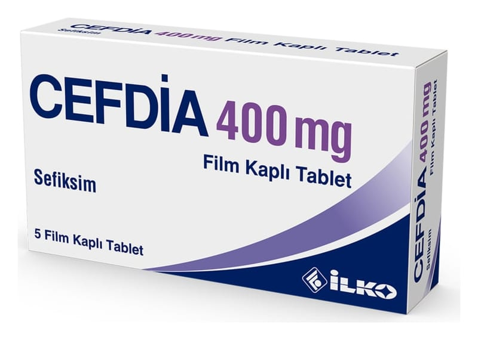

Cefdia 400 mg Film Kaplı Tablet ,5 Adet

Ne için kullanılır
KT · Bölüm 1CEFDİA, b eyaz renkli, çentikli, oblong film kaplı tabletlerdir. Her ambalajda 10 adet çentikli film tablet içeren PVC/Al blister ambalajlarda piyasaya sunulmaktadır.
CEFDİA, sefiksim adlı bir ilacın etkin maddesini içermektedir. Bu ilaç sefalosporinler olarak bilinen bir antibiyotik grubuna dahildir.
CEFDİA, bakterilere bağlı gelişen bazı enfeksiyonların tedavisinde kullanılır. CEFDİA’nın kullanıldığı enfeksiyonlar şunlardır: • Akut otitis media ( Orta kulak iltihabı) • Akut sinüzit ( Sinüslerin iltihabı)
• Akut tonsillofarenjit veya farenjit (Bademcik veya boğaz iltihabı) • Kronik bronşitin akut bakteriyel alevlenmesi (Akciğerlere hava taşıyan bronşların iltihabı) • Komplike olmayan üriner sistem enfeksiyonları ( Mesane ve idrar yolları iltihabı), • Komplike olmayan gonokokkal enfeksiyonlar (Gonokok adlı bakterilere bağlı gelişen idrar yollarının en dış bölümünün enfeksiyonu)